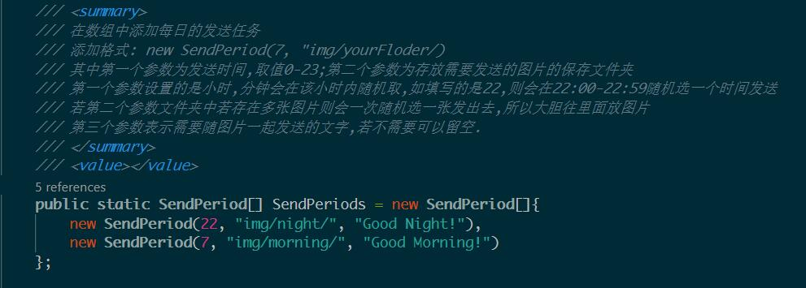
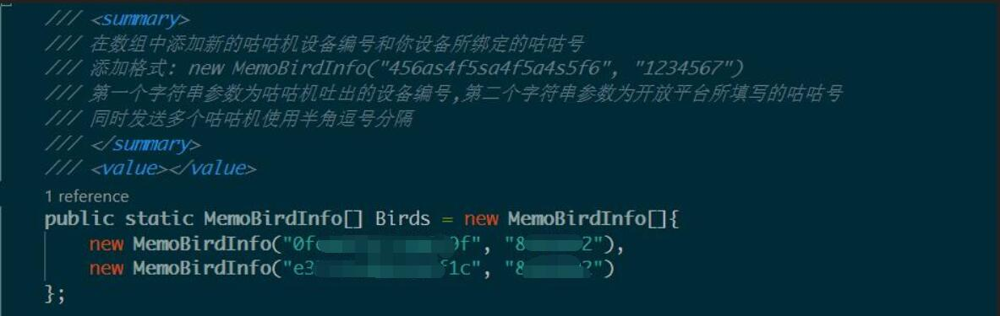

好机友-GoodBird
本文最后更新于：1 天前
好机友-GoodBird
引言
总所周知，要和女孩子保持长期稳定的良好关系需要具备以下几个特性：
- 嘴巴甜
- 能经常相互吹牛
- 看起来很是贴心
- 懂浪漫
Romantics
然而对于我来说，我一长舌男，说话从不拐弯，所以不满足第一条；然后我P事儿又比较多，加上长舌男特性，分分钟结束话题；看起来比较贴心应该是指让别人觉得I hold you，比如一日三餐嘘寒问暖，可是我年纪大了，记性不好，老是忘记在特定时间主动表达一下关心;然后又是钢铁直男，没有浪漫细胞怎么办？！！
哈！有了好机友，这些都不是问题啦！什么是好机友？
简单来说好机友是基于咕咕机的远程打印功能实现的能够每日定时向你的好机友发送你的小纸条的一个服务处理程序。那啥是咕咕机？简单来说就是用来传纸条的小打印机，虽然官网上说是错题打印机，但是用来相互传纸条。这样比起来当前都在QQ微信上浪迹天涯，是不是感觉回到了；青春时代？
使用 GoodBird 的理由
那咕咕机怎么帮我实现上述那些愿望呢？首先逐个分析：
- 嘴巴甜：有个网站叫做
一言(可直接百度) ，一言是一个名言句子库，因此可以使用GoodBird发送一言的句子给你的好机友，够不够甜😁😁😁； - 能经常相互吹牛：吹牛不如吹气球，使用
GoodBird时不时发送几张气球照片给你的好机友，以达到keep in touch终极目的； - 看起来很是贴心：没有什么比一日三餐和节假日发点问候更加贴心的啦，使用
GoodBird吧，它能帮助记性不好的同学也能够记得给你的好机友发送问候； - 懂浪漫
Romantics：传纸条应该就够浪漫了吧，也可能是直男大脑限制了我的想象力。
综上，你还有啥理由不来使用 GoodBird 来给你的好机友发送定时问候呢？
关于 GoodBird
GoodBird 是使用C#编写的，基于 .NET Core 2.2 框架的控制台(小黑窗)程序,因此运行它需要确保你的计算机上拥有 dotnet 2.2 运行时.一般可以直接把代码克隆至本地,然后修改全局的运行参数,即可直接运行.
开源(Open Source)
项目已经在 github.com 开源,开源地址: https://github.com/QiQiWan/GoodBird
使用 GoodBird
确保计算机上安装了,git和dotnet 2.2 runtime（下载地址:https://dotnet.microsoft.com/download/dotnet-core/2.2）;
找一个空文件夹,在命令行中运行如下命令:
1 | |
然后将 Commmon.cs.example 改名为 Common.cs ,并根据注释配置或下面教程配置相关变量.
首次使用需要在咕咕机开放平台申请开发者账号,获取 ACCESS_KEY. 咕咕机开放平台: https://open.memobird.cn/
1 | |
然后,程序就会在你设置的时间给好机友发送小纸条啦!(期间不能退出程序,可以将其运行为后台服务)
GoodBird 的功能
GoodBird支持设置每日定时打印任务GoodBird支持同时发送给多个咕咕机GoodBird支持打印自定义打印内容(文字,图片等)
基本配置
打开 Common.cs 有个需要首先配置的变量,如下图:
该变量在申请到开发者账号后从账号信息中复制过来:
配置定时任务

变量 SendPeriods 是一个数组,这个数组确定了定时任务队列,数组中每个元素都是一次发送计划,可以定义发送计划的时间(0-23),然后程序会在指定小时内,随机选个时间发送;可以定义发送计划在哪个文件夹读取需要发送的图片,示例图片在 img/night(morning)/ ;可以指定随图片一起发送的文字 message, 可以留空.
如,我要每天在7点-8点的随机时间发送一个早餐问候,图片在文件夹 img/morning/ 中,同时发送文字: “Good Morning”,可以这样写:
1 | |
同时发送至多个打印机

变量 Birds 也是一个数组,这个数组内包含打印机的基本信息,其中咕咕机的设备编号是双击咕咕机吐出来的设备编号,第二个参数为你在开放平台填写的咕咕号:
添加在该数组中的打印机在打印时会向他们发送相同的小纸条
自定义打印机内容
打印机发送的图片目录和一起发送的文字在配置定时任务时定义,若配置的图片文件夹下存在多个图片文件,则会随机选取一张图片打印发送;同时随图片发送的文字也支持自定义.
想要每天发送不同的图片给好机友,可以在定时任务文件夹中多放几张图片哦.
拓展
- 添加一言支持,程序继承了http请求模块,可以直接调用该模块请求一言的语句接口,并将其写入定时任务中
- 每日定时任务固定时间打印,如指定在
7:30AM打印,在hour后面加上分钟即可,如:1
new SendPeriod(7, 30, "img/morning/", "Good Morning!")
设计思路
根据官方提供的文档来看[1],执行一次咕咕机远程打印需要三个步骤:
- 将图片转为灰度base64位图,官方提供转换接口: http://open.memobird.cn/home/getSignalBase64Pic
- 账号关联设备,并获得关联ID: http://open.memobird.cn/home/setuserbind
- 将内容发送至指定的咕咕机,并打印: http://open.memobird.cn/home/printpaper
因此程序的逻辑设计:
- 定义咕咕机服务器类型
GoodBirdServer - 配置定时任务: 定时检查是否到达发送时间,定时刷新每天的发送时间
- 服务器启动时,根据相应的定时时间启动定时任务
- 配置纸条发送方法:
- 获取定时任务的图片位置,随机抽取一张图片,将其转为Base64,并通过接口转换为指定位图
- 获取定时任务的文字信息,并转换为Base64位图.
- 请求设备关联API,获得关联号
- 按照文档的方法进行参数拼接
- 考虑到图片长度较长(几万字节),采用Post的请求方法,直接发送纸条
- 定时检查若到相应达定时任务指定的时间则触发纸条发送事件,向所有记录的咕咕机发送纸条
联系我
如果你在使用过程中遇到了问题或者有更好的意见或建议,欢迎邮件给我哦: qiqi@eatrice.cn
参考资料
本博客所有文章除特别声明外，均采用 CC BY-SA 4.0 协议 ，转载请注明出处！